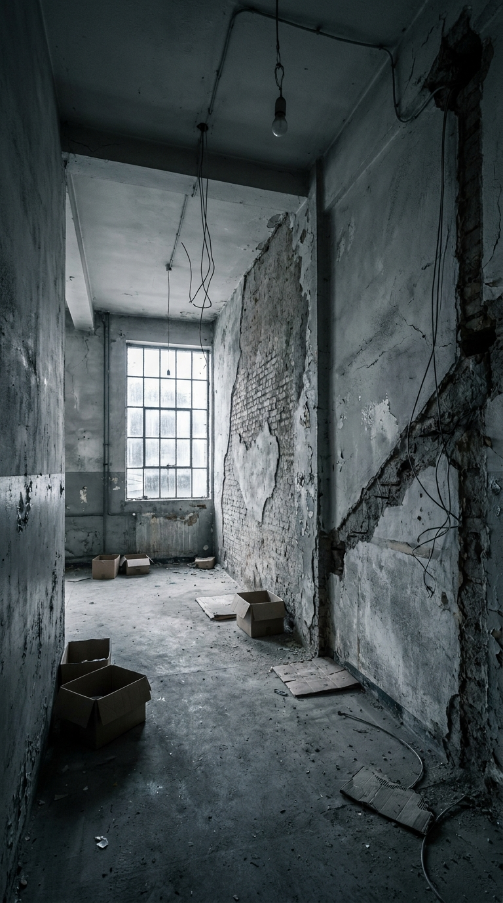

Anuncio Vídeo Final Acabado
Fotogramas Clave de Referencia (Prompts Ancla)

creaciones/reforma-tipo-1/PROMPTS-antes-durante-final.md
Reforma Tipo 1 — Loft industrial · Antes / Obra / Final
Flujo 3 imágenes + 1 vídeo (10s) · cámara fija idéntica en las 3 para coherencia total.
Prompts de imagen/vídeo en inglés · voz y rótulos en español de España.
Marca nueva sin logo → end card con hueco de marca (montar en CapCut).
Imagen 1 — Antes / pre-reforma · 9:16
Hyperrealistic photograph, vertical 9:16. A run-down, pre-renovation double-height loft space, abandoned and dated. Shot on a 24mm wide-angle lens at eye level, camera positioned at the entrance looking straight into the space. Composition: empty floor in the foreground, a damaged wall on the right where a future metal staircase will go, an old plastered brick wall in the center, and a large dusty window at the back-left as the only light source. Details: cracked grey plaster, water stains, peeling paint, old exposed wiring hanging loose, a bare dim bulb, dust on the floor, a couple of leftover cardboard boxes, no furniture. Cold flat daylight coming from the dirty back window, gloomy shadows, slightly desaturated. Real-estate "before" look, gritty and neglected, photorealistic, sharp focus, natural imperfections.Imagen 2 — Durante / obra · 9:16
Hyperrealistic photograph, vertical 9:16. The SAME double-height loft, mid-renovation, active construction site. EXACT same camera: 24mm wide-angle, eye level, from the entrance looking in, same framing as before — empty foreground, right wall, central brick wall, back-left window. Now: metal scaffolding against the right wall, a half-built grey steel staircase frame, exposed steel I-beams on the ceiling being installed, the brick wall partially sandblasted and clean on one side, dusty on the other. Two construction workers in grey work clothes, hard hats and dust masks, one drilling into the brick, one carrying a wooden board. Tools on the floor: drill, level, buckets, cables, a wheelbarrow with rubble. Fine construction dust floating in the air, caught in a beam of daylight from the back window. Work lamp on a tripod adding warm light. Dynamic, real, gritty, photorealistic, motion-implied, sharp focus.Imagen 3 — Final / reforma acabada · 9:16
Hyperrealistic photograph, vertical 9:16. The SAME loft, fully renovated and completely finished, identical camera and framing as the previous images (24mm wide-angle, eye level, from the entrance looking in). NO scaffolding, NO tools, NO rubble, NO dust, NO workers — the renovation is 100% complete and clean. Finished result: a sleek grey steel staircase with light oak wood treads on the right, fully restored exposed red brick wall in the center, smooth painted walls, black steel I-beam ceiling with integrated track lighting and two black industrial pendant lamps, a polished microcement dining bar with two black Eames-style designer chairs with wooden legs, a tall multi-pane window at the back-left flooding the space with warm soft natural daylight, a small green plant and minimalist décor on the bar, a clean spotless microcement floor. Warm, high-end industrial loft finish, magazine interior photography, balanced golden natural light, photorealistic, crisp, inviting, move-in ready.Vídeo final · 9:16 · 10s
Use the three reference images in order (Image 1 = before, Image 2 = during, Image 3 = after) as keyframes for a single 10-second vertical clip of the SAME loft, locked-off camera, no camera movement, only the space transforms.
0.0–3.0s: the abandoned pre-renovation loft (Image 1), still and silent, cold light, dust settling.
3.0–6.5s: hard cut to the active construction site (Image 2) — workers drilling, dust floating in the light beam, scaffolding, real building energy, slight handheld micro-shake for realism.
6.5–10.0s: a smooth, satisfying transition/wipe as the dust clears and resolves into the finished renovated loft (Image 3) — warm light blooms in, everything clean and complete, slow gentle push-in for the reveal.
Ambient sound design: 0–3s low empty-room reverb and a faint echo; 3–6.5s real construction ambience — drilling, hammering, sanding, muffled voices, rubble; 6.5–10s the noise abruptly stops, a clean satisfying "whoosh" on the transition, then calm soft room tone.
Voice-over (Spanish from Spain, warm and confident): "Así empezó... y así lo entregamos. Tu espacio, reformado de principio a fin."
Photorealistic, consistent lighting evolution from cold to warm, seamless before-during-after storytelling.marcas/reforma-tipo-1/marca.md
Reforma Tipo 1 — Empresa de reformas
- Alias / cómo la llama el usuario:
reforma tipo 1,reformas - Sector: reformas integrales de viviendas y espacios (obra)
- Tono: cercano, profesional, "llave en mano", honesto (mostrar el proceso real de obra)
- Estado: marca nueva — línea visual NO cerrada y sin logo todavía.
Identidad visual
Logo: pendiente. El usuario añadirá los logos en logos/ más adelante. NO usar logos de otras marcas.
Acento de color: sin definir (propuesta a falta de logo: gris cemento + negro + un acento cálido/madera).
Mundo de marca: industrial/loft real, antes-durante-después, obra auténtica (polvo, andamio, herramienta) que resuelve en acabado limpio y cálido.
Flujo de referencia
Formato estrella: antes → obra (con sonido de ambiente) → reforma acabada. 3 imágenes hiperrealistas con cámara fija idéntica + 1 vídeo 10s que las encadena (ambiente de obra + voz en off ES-España).
Showroom y Metodología
Este proyecto publicitario se basa en la técnica 3+1 (3 imágenes y 1 vídeo) y enseña cómo simular la transformación física real de un espacio sin perder consistencia tridimensional.
Fórmulas de Prompts Utilizadas
Hyperrealistic photograph, vertical 9:16. A run-down, pre-renovation double-height loft space, abandoned and dated. Shot on a 24mm wide-angle lens at eye level...Hyperrealistic photograph, vertical 9:16. The SAME double-height loft, mid-renovation, active construction site. EXACT same camera: 24mm wide-angle, eye level...Hyperrealistic photograph, vertical 9:16. The SAME loft, fully renovated and completely finished, identical camera and framing (24mm wide-angle, eye level)...Use the three reference images in order (Image 1 = before, Image 2 = during, Image 3 = after) as keyframes for a single 10-second vertical clip...Instrucciones de Montaje en CapCut
- **0.0 - 3.0s (Antes):** Rótulo central: `ANTES` · Subtítulo: `Espacio sin aprovechar` - **3.0 - 6.5s (Obra):** Rótulo central: `MANOS A LA OBRA` · Subtítulo: `Reforma integral` - **6.5 - 10.0s (Reveal):** Rótulo central: `DESPUÉS` · Subtítulo: `Tu reforma, llave en mano` - **End Card:** Loft final desenfocado + hueco para logotipo + CTA: `Pide tu presupuesto` - **Voz en Off (ES-España):** *"Así empezó. Manos a la obra. Y así lo entregamos: tu espacio, reformado de principio a fin."*
Lecciones de este Proyecto
Este proyecto representa la cumbre de la técnica 3+1 (3 imágenes + 1 vídeo), y demuestra cómo engañar al algoritmo para renderizar transformaciones tridimensionales complejas.
- Consistencia Absoluta: Se logra especificando exactamente los mismos metros, la misma cámara frontal y la misma lente de 24mm en los tres fotogramas.
- Anclas Espaciales: La ventana trasera y la pared del fondo actúan como puntos fijos de referencia tridimensional para que la IA interpole de forma fluida.
- Exclusiones Clave: El uso de palabras de exclusión en la fase final evita que la IA dibuje de forma accidental restos de andamios u obreros.